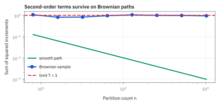

13.1 Why Ordinary Calculus Fails on Brownian Motion
ผลรวมก้าวเล็กกำลังสองไม่หาย แม้แบ่งเวลาให้ถี่ขึ้น
เส้นหนึ่งเดินตรงจาก 0 ไป 1 ในหนึ่งปี อีกเส้นเดินสุ่มแบบ Brownian motion หนึ่งปี แบ่งเวลาเป็น 50, 200 และ 1,000 ช่วง แล้วบวกกำลังสองของการขยับแต่ละช่วง ผลรวมของแต่ละเส้นเป็นเท่าไร?
เฉลย: เส้นตรงได้ 0.02, 0.005 และ 0.001 หายเข้าหาศูนย์ ส่วนเส้นสุ่มได้เฉลี่ย 1 ทุกครั้ง และเหวี่ยงรอบ 1 แค่ ±0.20, ±0.10 และ ±0.045 ยิ่งซอยถี่ ผลรวมยิ่งนิ่งที่ 1
calculus ที่เรียนมาทิ้งพจน์กำลังสองเพราะมันหายเสมอ แต่กับเส้นสุ่มมันไม่หาย chain rule จึงต้องมีพจน์เพิ่ม ตำราเรียกผลรวมนี้ว่า quadratic variation
เริ่มจากของเล็ก ๆ ที่ปกติเราทิ้งได้ แต่คราวนี้ทิ้งไม่ได้
calculus ที่เรียนมาทั้งหมดยืนอยู่บนนิสัยข้อเดียว คือเวลาซอยช่วงให้เล็กลง ของที่ยกกำลังสองจะหดเร็วกว่าของที่ไม่ยกกำลัง จนทิ้งได้โดยไม่ผิด
ลองตรวจนิสัยข้อนี้กับเส้นสองเส้น เส้นแรกเดินตรงจาก 0 ไป 1 ในหนึ่งปี ซอยเป็น 50, 200 และ 1,000 ช่วง แล้วบวกกำลังสองของการขยับ ได้ 0.02, 0.005 และ 0.001 หดเข้าหาศูนย์ตามที่ควรเป็น
เส้นที่สองเดินสุ่มแบบ Brownian motion ทำแบบเดียวกัน ได้ 1 ทุกครั้ง และยิ่งซอยถี่ยิ่งนิ่งที่ 1 ไม่ยอมหายไปไหน ของที่ทิ้งไม่ได้ก้อนนี้คือเหตุผลทั้งหมดที่ต้องมี calculus อีกชุดหนึ่งสำหรับเส้นแบบนี้โดยเฉพาะ และหัวข้อนี้วัดมันออกมาให้เห็นเป็นตัวเลข
ศัพท์ที่ใช้ในหัวข้อนี้
- Brownian motion
- เส้นทางสุ่มที่ต่อเนื่อง การขยับแต่ละช่วงไม่เกี่ยวกัน เป็นรูประฆัง และมี variance เท่ากับเวลาของช่วง (บทที่ 9) ใช้เป็นตัวขับ noise ในแบบจำลองราคา
- increment
- การขยับของเส้นทางในหนึ่งช่วงเวลา ใช้เป็นก้อนที่เอามาคิดกำลังสองแล้วบวก
- quadratic variation
- ผลรวมกำลังสองของการขยับทุกช่วงเมื่อซอยเวลาถี่ขึ้นเรื่อย ๆ ใช้วัดความขรุขระสะสมของเส้นทาง และเป็นที่มาของพจน์เพิ่มใน chain rule
- variance
- ค่าเฉลี่ยของกำลังสองของระยะห่างจากค่าเฉลี่ย ใช้วัดขนาดของความสุ่ม
- standard deviation
- รากที่สองของ variance มีหน่วยเดียวกับตัวแปรเดิม ใช้บอกว่าผลรวมเหวี่ยงรอบค่าเฉลี่ยกว้างแค่ไหน
- volatility
- standard deviation ของผลตอบแทนต่อหนึ่งปี ใช้ปรับขนาด noise ของ Brownian motion ให้เท่ากับของสินทรัพย์
- drift
- ผลตอบแทนเฉลี่ยต่อปีที่เส้นทางเอียงไป ใช้เทียบว่าวัดจากข้อมูลได้ยากกว่าความผันผวนแค่ไหน
- realized variance
- ผลรวมกำลังสองของผลตอบแทนที่เห็นจริงในช่วงหนึ่ง ใช้ประมาณความผันผวนจากข้อมูล
- Taylor expansion
- การเขียนค่าของ function ใกล้จุดหนึ่งเป็นค่าที่จุดนั้น บวกความชันคูณระยะ บวกความโค้งคูณระยะกำลังสอง ใช้หาว่าพจน์ไหนทิ้งได้
- chain rule
- กฎหาการเปลี่ยนของ f ของอะไรสักอย่าง จากการเปลี่ยนของสิ่งข้างใน ใช้กับราคา option ที่เป็น function ของราคาหุ้น
- Itô correction
- พจน์ครึ่งหนึ่งของความโค้งคูณเวลา ที่ chain rule ของเส้นสุ่มต้องเติม ใช้แก้คำตอบที่ chain rule ปกติให้ผิด
- option
- สัญญาที่ให้สิทธิ์ซื้อหรือขาย underlying ตามเงื่อนไขที่กำหนด ใช้เป็นตัวอย่างของมูลค่าที่เป็น function โค้งของราคา
- underlying
- สินทรัพย์อ้างอิงที่มูลค่าของสัญญาผูกอยู่ ใช้ระบุว่าราคาใดเป็นตัวขับของ option
สัญลักษณ์ที่ใช้ในหัวข้อนี้
| สัญลักษณ์ | ความหมาย | หน่วย |
|---|---|---|
| $W_t$ | Brownian motion มาตรฐาน ณ เวลา $t$ | $\sqrt{\text{year}}$ |
| $T$ | ความยาวเวลาทั้งหมด | year |
| $n$ | จำนวนช่วงที่ซอยเวลา | ช่วง |
| $\Delta t$ | ความยาวหนึ่งช่วง เท่ากับ $T/n$ | year |
| $\Delta W_i$ | การขยับของเส้นสุ่มในช่วงที่ $i$ | $\sqrt{\text{year}}$ |
| $Z_i$ | ตัวเลขสุ่มจากระฆังมาตรฐาน แต่ละช่วงไม่เกี่ยวกัน | ไม่มีหน่วย |
| $Q_n$ | ผลรวมกำลังสองของการขยับทั้ง $n$ ช่วง | year |
| $C_n$ | ผลรวมกำลังสามของขนาดการขยับ | $\text{year}^{3/2}$ |
| $\sigma$ | volatility ต่อปี | $1/\sqrt{\text{year}}$ |
| $RV$ | realized variance ของหนึ่งปี | ต่อปี |
ขั้นที่ 1 — เส้นเรียบ: ผลรวมกำลังสองหายไป
เริ่มจากเส้นตรง x(t) = t บนหนึ่งปี ซอยเป็น n ช่วงเท่ากัน ทุกช่วงขยับเท่ากับความยาวช่วงพอดี
กำลังสองของก้าวเล็กเล็กกว่าตัวก้าวมาก บวก n ก้อนแล้วยังเหลือหนึ่งส่วน n ซอยถี่ขึ้นเท่าไรก็ยิ่งหาย นี่คือเหตุผลที่ calculus ปกติทิ้งพจน์กำลังสองได้เสมอ ทุกเส้นที่มีความชันก็เป็นแบบนี้
ขั้นที่ 2 — ของที่โจทย์ให้: ก้าวของเส้นสุ่มมีขนาดรากของเวลา
Brownian motion ของบทที่ 9 กำหนดให้การขยับในช่วงยาว Δt เป็นรูประฆังที่ค่าเฉลี่ยศูนย์ และ variance เท่ากับ Δt เขียนเป็นก้อนมาตรฐานคูณตัวปรับขนาด
ตัวปรับขนาดต้องเป็นรากของ Δt เพราะ variance ถูกคูณด้วยกำลังสองของตัวปรับ ก้าวของเส้นสุ่มจึงใหญ่กว่าก้าวของเส้นเรียบมาก เมื่อ Δt = 0.001 ก้าวเรียบยาว 0.001 แต่ก้าวสุ่มยาวราว 0.032
ขั้นที่ 3 — ทำไมต้องเป็นรากของเวลา: ขนาดอื่นพังทั้งคู่
ลองขนาดอื่นแล้วดูว่าความผันผวนรวมทั้งปีเป็นเท่าไร ก้าวแต่ละช่วงไม่เกี่ยวกัน variance จึงบวกกันได้
ถ้าก้าวเล็กแบบเส้นเรียบ ความผันผวนรวมทั้งปีหายไปเมื่อซอยถี่ เส้นทางจะแบนราบ ไม่ใช่ random walk ขนาดรากของเวลาคือขนาดเดียวที่ทำให้ความผันผวนทั้งปีเท่าเดิม ไม่ว่าจะซอยกี่ช่วง
ขั้นที่ 4 — ผลรวมกำลังสองของเส้นสุ่มเฉลี่ยเท่ากับเวลาพอดี
ทำแบบขั้นที่ 1 กับเส้นสุ่ม หากำลังสองของแต่ละก้าวแล้วบวก จุดที่ต่างจากเส้นเรียบอยู่ที่บรรทัดสอง
รากหายไปกับกำลังสองพอดี เหลือความยาวช่วงเต็ม ๆ ไม่ใช่กำลังสองของความยาวช่วงแบบเส้นเรียบ บวก n ก้อน n ตัดกันหมด เหลือ T ไม่ว่าจะซอยละเอียดแค่ไหน
ขั้นที่ 5 — กำลังสามหายไป: กำลังสองคือกำลังเดียวที่รอด
ถ้าสงสัยว่ากำลังสองพิเศษจริงไหม ลองกำลังสาม ก่อนอื่นหาค่าเฉลี่ยของขนาดก้อนมาตรฐานกำลังสาม ด้วยการแทน u = z²/2
เมื่อแทน u = z²/2 จะได้ z³ dz = 2u du และพื้นที่ใต้ $u\,e^{-u}$ จาก 0 ถึงอนันต์เท่ากับ 1 ต่อมา ตัวคูณเวลาของกำลังสามคือ $(T/n)^{3/2}$ บวก n ก้อนแล้วยังเหลือหนึ่งส่วนรากของ n จึงหายไป
กำลังหนึ่งบวกกันเป็นเส้นทางที่เหวี่ยงไปมา กำลังสามขึ้นไปหายหมด กำลังสองไปหา T พอดี
ขั้นที่ 6 — ผลรวมกำลังสองแทบไม่เหวี่ยงเมื่อซอยถี่
ค่าเฉลี่ยเป็น T แล้ว ต่อไปดูว่าเหวี่ยงรอบ T แค่ไหน ค่าเฉลี่ยของกำลังสี่ของก้อนมาตรฐานคือ 3 (หัวข้อ 9.5) และแต่ละช่วงไม่เกี่ยวกัน
ตัวคูณข้างหน้ามีกำลังสองของ n ขณะที่จำนวนก้อนมีแค่ n ความผันผวนจึงหดตามรากของจำนวนช่วง ผลรวมนี้ประกอบจากของสุ่มล้วน ๆ แต่ออกมาเป็นตัวเลขที่รู้ล่วงหน้าได้ นี่คือตัวเลขของคำถามเปิด
Figure 13.1a — เส้นเรียบกับเส้นขรุขระย่อสเกลไม่เหมือนกัน

เส้นเรียบมีผลรวมกำลังสองหดสู่ 0 แต่เส้นสุ่มมีผลรวมกำลังสองเกาะรอบ 1 ความต่างนี้คือเหตุผลที่ chain rule ต้องเปลี่ยน
ขั้นที่ 7 — ลองด้วยมือ: T = 1 ซอย 4 ช่วง
ใช้ตัวเลขสุ่มสี่ตัวคำนวณผลรวมกำลังสองจริง เพื่อเห็นว่า grid หยาบยังเหวี่ยงมาก
ได้ 0.620 ห่างจาก 1 ค่อนข้างมาก แต่ความผันผวนที่ 4 ช่วงคือ 0.707 ระยะนี้จึงไม่แปลก ถ้าเพิ่มเป็น 10,000 ช่วง ความผันผวนเหลือ 0.014 ผลรวมจะติด 1 แน่น
Figure 13.1b — quadratic variation ที่วัดได้เหวี่ยงแค่ไหน

ที่หนึ่งปี ความผันผวนลดจาก 0.50 เมื่อมี 8 ช่วง เหลือ 0.044 เมื่อมี 1,024 ช่วง grid หยาบจึงไม่ควรถูกอ้างว่าเท่ากับ 1 แบบเป๊ะ
ขั้นที่ 8 — ผลในทางปฏิบัติ: วัดความผันผวนได้แม่น แต่วัด drift ไม่ได้
หุ้นที่ volatility 20% ต่อปี ผลตอบแทนรายวันคือ σ คูณรากของ 1/252 (หนึ่งปีมี 252 วันเทรด) คูณก้อนมาตรฐาน realized variance ของหนึ่งปีจึงเป็น σ² คูณ Q ของ 252 ช่วง ใช้ขั้นที่ 4 และ 6 ได้ทันที
ข้อมูลรายวันหนึ่งปีวัดความผันผวนได้ 20% บวกลบราว 0.9 จุด เพราะรากของ σ² + e ประมาณเท่ากับ σ + e/(2σ) ส่วน drift วัดจากค่าเฉลี่ยของผลตอบแทน ซึ่งซอยถี่ไม่ช่วยเลย
จะเห็น drift 8% ที่เกณฑ์สองเท่าของความผันผวนต้องใช้ข้อมูล 25 ปี ผลรวมกำลังสองที่ไม่หายคือเหตุผลที่ความผันผวนวัดได้แม่นกว่า drift มาก
ขั้นที่ 9 — กฎของ Itô: สรุปเป็นตัวย่อของ limit
ขั้นที่ 4 และ 6 บอกว่าผลรวมกำลังสองไปหา T และความผันผวนหายไป ตำราย่อข้อความนี้เป็นกฎสั้น ๆ ที่ใช้ตลอดบท
กฎนี้ไม่ได้บอกว่ากำลังสองของทุกก้าวเท่ากับ dt เป๊ะ แต่ละก้าวยังสุ่ม สิ่งที่เท่ากับเวลาคือผลรวมของทุกก้าวเมื่อซอยถี่ขึ้นเรื่อย ๆ
ขั้นที่ 10 — ตารางคูณของ Itô: ทำไม dW dt และ dt² เป็นศูนย์
นับขนาดแบบเดียวกัน พจน์ไหนเล็กกว่าความยาวช่วงจะหายเมื่อบวกทั้งปี ก่อนอื่นค่าเฉลี่ยของขนาดก้อนมาตรฐานคือ 2 คูณ integral ของ z คูณระฆังจาก 0 ถึงอนันต์
ผลคูณของก้าวสุ่มกับความยาวช่วงมีขนาดราว $(\Delta t)^{3/2}$ บวก n ก้อนแล้วเหลือหนึ่งส่วนรากของ n จึงหายไป ความยาวช่วงกำลังสองหายเร็วกว่านั้นอีก ในสี่ช่องของตาราง เหลือรอดช่องเดียว
Figure 13.1c — ตารางคูณของ Itô

มีเพียงช่อง Brownian คูณ Brownian ที่รอดในขนาดของเวลา ช่องอื่นเล็กเกินไปเมื่อบวกทั้งช่วง
ขั้นที่ 11 — chain rule ปกติให้คำตอบผิด: ลองกับ W²
ใช้ f(W) = W² ที่รู้คำตอบอยู่แล้ว ค่าเฉลี่ยของ $W_1^2$ คือ variance ของ $W_1$ ซึ่งเท่ากับ 1 ดูว่า chain rule สองแบบให้อะไร แล้วตรวจกับสี่ช่วงของขั้นที่ 7
สามบรรทัดแรกกระจายวงเล็บตรง ๆ ไม่มีการประมาณ บวกทุกช่วงได้ผลรวมที่เป็นจริงเสมอ ก้อนแรกเฉลี่ยศูนย์ เพราะแต่ละก้าวเฉลี่ยศูนย์และตำแหน่งก่อนก้าวรู้อยู่แล้ว
chain rule ปกติทิ้งผลรวมกำลังสองไป จึงได้ค่าเฉลี่ยศูนย์ ซึ่งผิด ตัวเลขสี่ช่วงยืนยัน ก้อนแรก −0.574 บวกผลรวมกำลังสอง 0.620 ได้ 0.046 เท่ากับตำแหน่งสุดท้าย 0.215 ยกกำลังสองพอดี
ขั้นที่ 12 — chain rule ของ Itô สำหรับ f ใด ๆ: เก็บพจน์ความโค้ง
ทำแบบเดียวกับ f ทั่วไปด้วย Taylor expansion พจน์ที่สองคือความโค้งคูณกำลังสองของก้าว ซึ่งเส้นเรียบทิ้งได้ แต่เส้นสุ่มทิ้งไม่ได้
พจน์ครึ่งหนึ่งของความโค้งคูณ dt คือ Itô correction แทน f = W² แล้วได้ผลเดียวกับขั้นที่ 11 พจน์นี้คือราคาที่ต้องจ่ายเพราะเส้นทางขรุขระ หัวข้อ 13.2 จะใช้กับราคาหุ้นจริง
คำตอบ ตรวจเอง และแปลว่าอะไร
โจทย์ให้อะไรมาบ้าง: เส้นสุ่มหนึ่งปี ซอยเป็น 50, 200 และ 1,000 ช่วง
คำตอบ: ผลรวมกำลังสองเฉลี่ย 1 ทุกกรณี ความผันผวนคือ 0.200, 0.100 และ 0.0447 แต่ละรอบไม่จำเป็นต้องเท่ากับ 1 แต่ต้องเข้าใกล้ 1 เมื่อซอยถี่ขึ้น ถ้าคูณ σ² เข้าไปจะได้ realized variance ที่เข้าใกล้ σ² คูณเวลา
ตรวจเองใน 10 วินาที: รากที่สองของ 2/50, 2/200 และ 2/1000 ต้องได้ 0.200, 0.100 และ 0.0447
แปลว่าอะไร: ใช้ตัวเลขนี้เลือกจำนวนช่วงของข้อมูลให้ความผันผวนของ realized variance ต่ำพอก่อนรายงาน volatility
กับดัก: แทนกำลังสองของทุกก้าวด้วย dt ในโปรแกรมจำลอง
กฎ (dW)² = dt เป็นตัวย่อของผลรวม ไม่ใช่ของทีละขั้น บางก้าวกำลังสองมากกว่า dt บางก้าวน้อยกว่ามาก ถ้าเขียนโปรแกรมที่ใช้ dt แทนทุกก้าว เส้นทางจะเรียบเกินจริง และความเสี่ยงที่วัดได้จะต่ำกว่าความจริงอย่างเป็นระบบ ส่วน 4 ก้าวที่เลือกให้ขนาดเท่ากันจนผลรวมเท่ากับ 1 พอดี ก็ไม่ใช่ตัวอย่างสุ่มทั่วไป
ที่มาที่ไป: ใครสะดุด และทำไมต้องเปลี่ยนกฎ
ราวปี 1827 Robert Brown เห็นเกสรกระโดดไปมาในน้ำใต้กล้องจุลทรรศน์ ปี 1900 Louis Bachelier ใช้เส้นทางสุ่มแบบนี้อธิบายราคาหุ้นในวิทยานิพนธ์ที่ Sorbonne แต่ยังไม่มี calculus ให้ใช้ ปี 1905 Einstein อธิบายว่าอนุภาคกระโดดเพราะถูกโมเลกุลน้ำชน
ปี 1923 Norbert Wiener พิสูจน์ว่าเส้นทางนี้ต่อเนื่องทุกที่ แต่หาความชันไม่ได้ที่ไหนเลย chain rule ปกติจึงพัง เพราะมันสมมติว่ามีความชัน ปี 1944 Kiyosi Itô สร้าง calculus ชุดใหม่ที่เก็บพจน์กำลังสองไว้ และกลายเป็นรากฐานของสูตรตั้งราคา derivative ทุกตัว
ปี 1965 Paul Samuelson ค้นพบงานของ Bachelier อีกครั้ง และเสนอ geometric Brownian motion แทน เพราะราคาหุ้นติดลบไม่ได้ เขาใช้มันตั้งราคา warrant ได้บางแบบ และเป็นอาจารย์ที่ปรึกษาปริญญาเอกของ Robert Merton
ข้อจำกัด: วิธีนี้สมมติอะไร และของจริงเป็นอย่างไร
| เรื่อง | วิธีนี้สมมติว่า | ของจริงเป็นอย่างไร | ผลที่ตามมาเวลาใช้งาน |
|---|---|---|---|
| ข้อมูลจริง | ผลรวมกำลังสองเข้าใกล้เวลาที่ผ่านไป | ข้อมูลจริงมีสัญญาณรบกวนจากโครงสร้างตลาด | ค่าที่วัดได้สูงเกินจริงเมื่อวัดถี่มาก |
| ความต่อเนื่อง | ไม่มีการกระโดด | มีการกระโดด | ค่าที่วัดได้จะรวมการกระโดดเข้ามาด้วย ซึ่งควรแยกออกก่อนตีความ |
| ขอบเขตของข้อสรุป | ผลนี้ใช้ได้กับข้อมูลทุกชนิด | ใช้ได้กับกระบวนการที่มีสมบัติแบบนี้เท่านั้น | อย่านำไปใช้กับอนุกรมเวลาที่ไม่ใช่ random walk โดยไม่ตรวจก่อน |
แถวแรกเป็นเหตุผลที่การวัดความผันผวนจากข้อมูลรายวินาทีให้ค่าที่สูงผิดปกติ
แล้วเอาไปใช้ทำอะไรได้จริงบ้าง
ใช้เป็นเหตุผลว่าทำไมสูตรตั้งราคา option มีพจน์เพิ่มที่ไม่มีใน calculus ปกติ ใช้เป็นฐานของการวัดความผันผวนจากข้อมูลจริง ซึ่งอาศัยผลรวมกำลังสองที่ไม่หายนี้โดยตรง
ใช้ตรวจโค้ดจำลอง ผลรวมกำลังสองของเส้นทางที่จำลองได้ต้องอยู่ใกล้ σ² คูณเวลา ภายในความผันผวนที่ขั้นที่ 6 คำนวณไว้ ถ้าห่างเกินนั้น โค้ดมีปัญหา
โค้ดตรวจผลรวมกำลังสองของเส้นเรียบกับเส้นสุ่ม
import numpy as np
from math import sqrt, pi
for n, want in ((50, 0.02), (200, 0.005), (1000, 0.001)):
assert abs(n * (1 / n) ** 2 - want) < 1e-15 # smooth path
assert abs(4 / sqrt(2 * pi) - 1.596) < 5e-4
for n, a, b in ((50, 0.226, 0.200), (200, 0.113, 0.100), (1000, 0.050, 0.0447)):
assert abs(1.596 / sqrt(n) - a) < 5e-4 and abs(sqrt(2 / n) - b) < 5e-4
dW = 0.5 * np.array([0.31, -1.20, 0.85, 0.47])
assert np.allclose(dW, [0.155, -0.600, 0.425, 0.235]) and abs((dW ** 2).sum() - 0.620) < 5e-4
W = np.concatenate([[0], np.cumsum(dW)])
ito = 2 * (W[:-1] * dW).sum()
assert abs(ito + 0.574) < 5e-4 and abs(W[-1] ** 2 - (ito + (dW ** 2).sum())) < 1e-12
assert abs(0.04 * sqrt(2 / 252) - 0.00356) < 5e-6 and abs((2 * 0.20 / 0.08) ** 2 - 25) < 1e-9
rng = np.random.default_rng(14)
for n in (50, 1000):
Q = ((rng.standard_normal((4000, n)) * sqrt(1 / n)) ** 2).sum(1)
assert abs(Q.mean() - 1) < 0.02 and abs(Q.std() - sqrt(2 / n)) < 0.02โค้ดยืนยันว่าเส้นเรียบให้ผลรวมกำลังสองหายไป แต่เส้นสุ่มให้ค่าเฉลี่ย 1 เท่ากับเวลาและเหวี่ยงน้อยลงเมื่อซอยถี่ กำลังสามหายไป ตรวจสี่ก้าวด้วยมือว่า W² = 2ΣWΔW + Q พอดี และ drift ต้องใช้ข้อมูล 25 ปี
สรุปที่ใช้ได้จริง
- ก้าวของเส้นสุ่มมีขนาดรากของเวลา กำลังสองของมันจึงมีขนาดเท่าเวลา ไม่ใช่กำลังสองของเวลา
- ผลรวมกำลังสองเฉลี่ยเท่ากับ T และเหวี่ยง T คูณรากของ 2/n จึงนิ่งเมื่อซอยถี่ กำลังสามขึ้นไปหายหมด
- กฎ (dW)² = dt เป็นตัวย่อของผลรวม ไม่ใช่ของทีละขั้น dW dt และ dt² เป็นศูนย์
- chain rule ปกติให้ค่าเฉลี่ยของ W² เป็นศูนย์ ซึ่งผิด chain rule ของ Itô เติมครึ่งหนึ่งของความโค้งคูณ dt แล้วได้ 1 ตรงกับความจริง
- ข้อมูลรายวันหนึ่งปีวัด volatility 20% ได้แม่นราว ±0.9 จุด แต่ต้องใช้ 25 ปีกว่าจะเห็น drift 8%